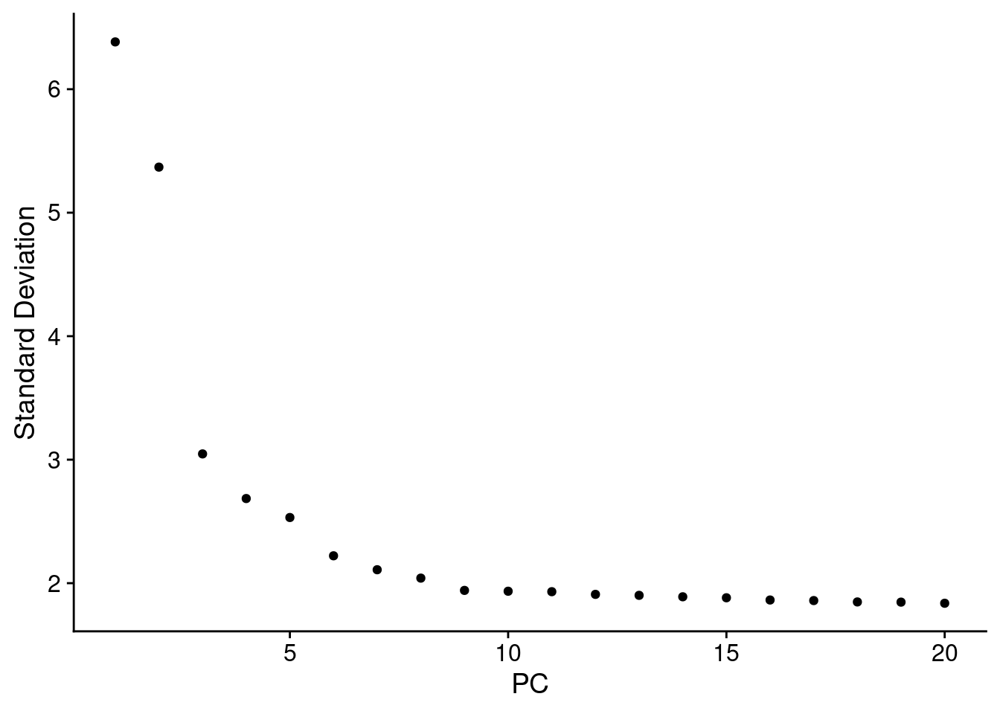
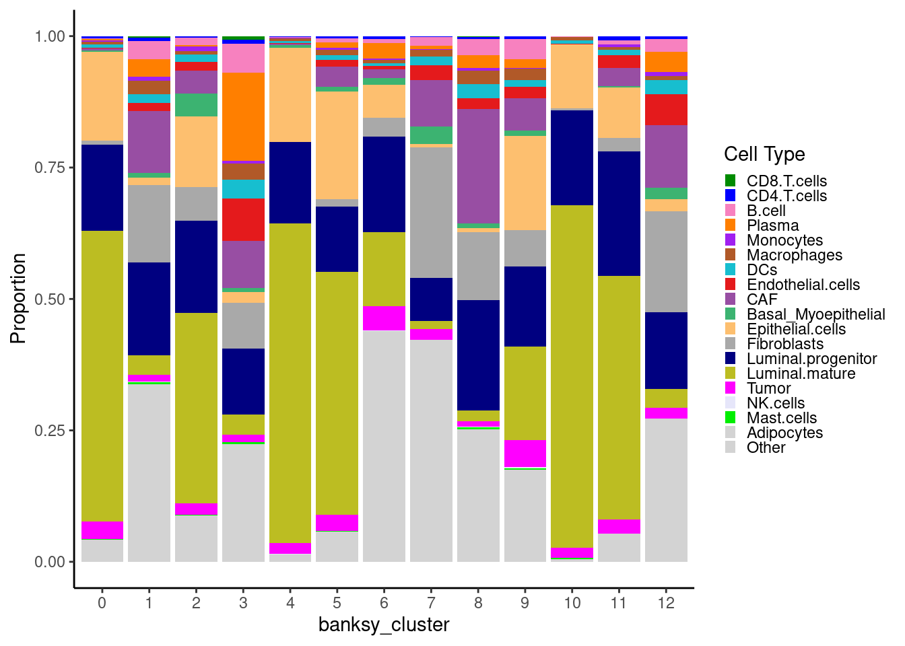

Intro to Spatial Data
Introduction
In this notebook we will introduce loading, pre- and post-processing, clustering and cell typing for a VisiumHD dataset.
Loading data
Here we load an already processed object downloaded from 10X genomics:
The full dataset is quite large, and so the next few code chunks are for demonstration purposes only. We will subset this object, which is what you will load later. Skip to Section 3 section to load the zoomed in object and proceed.
The code below illustrates how you would load and pre-process output from VisiumHD before saving a Seurat object.
# Set the directory where the data are
dirs <- c("data/Visium_HD_Breast_dataset_CRI/Output_Files/")
# Path to save individual processed Seurat objects
outs_path <- "objects/"
# Load individual sample
object <- Load10X_Spatial(data.dir = dirs, bin.size = c(8))
# Assign metadata
object$orig.ident <- "Visium_10X_breast_cancer"
object$sample_name <- "Visium_DCIS"
Idents(object) <- "sample_name"
# Compute mitochondrial percentage
object[["MT.percent"]] <- PercentageFeatureSet(object, pattern = "^MT-")
# Perform some initial data normalization and find variable features
DefaultAssay(object) <- "Spatial.008um"
object <- NormalizeData(object)
# Save the full object
saveRDS(object, file.path(outs_path, "Visium_DCIS.rds"))For the purposes of the tutorial we will subset the dataset to smaller section of tissue to save size and computational time
object_full <- readRDS("objects/Visium_DCIS.rds")
# Coordinates to zoom in to
coordinates <- GetTissueCoordinates(object_full)
min_x <- 12000
max_x <- 18000
min_y <- 13000
max_y <- 19000
subset_condition <- (coordinates$x > min_x) & (coordinates$y > min_y) & (coordinates$y < max_y) & (coordinates$x < max_x)
DCIS_zoom <- subset(object_full, cells = which(subset_condition))
# Remove completely empty bins
DCIS_zoom <- DCIS_zoom[, DCIS_zoom$nCount_Spatial.008um > 0]
# Update the seurat object to ensure object validity
DCIS_zoom <- UpdateSeuratObject(DCIS_zoom)
saveRDS(DCIS_zoom, file = "objects/Visium_DCIS_zoomed.rds")Hands On Section
We will start the hands on section here by loading the zoomed in VisiumHD tissue section prior to further downstream and plotting
object <- readRDS("objects/Visium_DCIS_zoomed.rds")
# We also set some plotting defaults
pt_size_factor <- 8We can plot some quality metrics like total counts, genes detected, and mitochondrial gene count per bin:
counts_violin <- VlnPlot(
object,
features = "nCount_Spatial.008um",
pt.size = 0,
raster = FALSE
) +
NoLegend()
counts_spatial <- SpatialFeaturePlot(
object,
features = "nCount_Spatial.008um",
pt.size.factor = pt_size_factor,
image.alpha = 0.8,
alpha = c(1, 1)
)
genes_violin <- VlnPlot(
object,
features = "nFeature_Spatial.008um",
pt.size = 0,
raster = FALSE
) +
NoLegend()
genes_spatial <- SpatialFeaturePlot(
object,
features = "nFeature_Spatial.008um",
pt.size.factor = pt_size_factor,
image.alpha = 0.8,
alpha = c(1, 1)
)
mt_violin <- VlnPlot(
object,
features = "MT.percent",
pt.size = 0,
raster = FALSE
) +
NoLegend()
mt_spatial <- SpatialFeaturePlot(
object,
features = "MT.percent",
pt.size.factor = pt_size_factor,
max.cutoff = "q99",
image.alpha = 0.8,
alpha = c(1, 1)
)
# Combine the plots using 'patchwork'
p0 <- (counts_violin | counts_spatial) /
(genes_violin | genes_spatial) /
(mt_violin | mt_spatial)
p0
Filter
Here we filter to keep only bins with less than 25% mitochondrial counts, 10 total counts, and 10 total genes detected per 8um bin.
# UMI and Gene Threshold
object$QCFilter <- ifelse(
object$MT.percent < 25 &
object$nCount_Spatial.008um > 10 &
object$nFeature_Spatial.008um > 10,
yes = "Keep", no = "Remove"
)
table(object$QCFilter)
Keep Remove
52967 3018 Take a look at the low quality bins using SpatialDimPlot()
p1 <- SpatialDimPlot(object,
group.by = "QCFilter",
pt.size.factor = pt_size_factor,
image.alpha = 0.2,
alpha = c(1, 0.2)
) +
guides(fill = guide_legend(override.aes = list(size = 4)))
p1Filter our object for only high quality bins
keep_cells <- colnames(object)[object$QCFilter == "Keep"]
object <- subset(object, cells = keep_cells)
# We find variable features and scale after quality filtering
object <- FindVariableFeatures(object)
object <- ScaleData(object)Now take a look at our object
objectAn object of class Seurat
18085 features across 52967 samples within 1 assay
Active assay: Spatial.008um (18085 features, 2000 variable features)
3 layers present: counts, data, scale.data
1 spatial field of view present: slice1.008umClustering
Above, we normalized the counts, and found the variable features as you would in a normal scRNA analysis workflow using Seurat. However, in spatial data, we use clustering methods like Banksy which make use of the spatial information when defining clusters. Check the documentation for the RunBanksy() command for more information.
# Run Banksy
object <- RunBanksy(object,
lambda = 0.8,
assay = "Spatial.008um",
slot = "data",
features = "variable",
k_geom = 24,
verbose = TRUE
)If we look at the object we now see that the active assay is set to BANKSY
objectAn object of class Seurat
22085 features across 52967 samples within 2 assays
Active assay: BANKSY (4000 features, 0 variable features)
2 layers present: data, scale.data
1 other assay present: Spatial.008um
1 spatial field of view present: slice1.008umNow we RunPCA() on the BANKSY assay.
ElbowPlot(object, reduction = "pca.banksy")Similar to conventional scRNA analysis, we now run FindNeighbors(), FindClusters(), and then RunUMAP()
object <- FindNeighbors(object,
reduction = "pca.banksy",
dims = 1:15
)
object <- FindClusters(object,
cluster.name = "banksy_cluster",
resolution = 0.3
)Modularity Optimizer version 1.3.0 by Ludo Waltman and Nees Jan van Eck
Number of nodes: 52967
Number of edges: 1440834
Running Louvain algorithm...
Maximum modularity in 10 random starts: 0.9182
Number of communities: 13
Elapsed time: 11 secondsobject <- RunUMAP(object,
reduction = "pca.banksy",
reduction.name = "umap.banksy",
return.model = T,
dims = 1:15
)# Define distinct colors
Idents(object) <- "banksy_cluster"
distinct_palette <- c(
"0" = "#1f77b4",
"1" = "#ff7f0e",
"2" = "#2ca02c",
"3" = "#d62728",
"4" = "#9467bd",
"5" = "#8c564b",
"6" = "#ff99cc",
"7" = "#7f7f7f",
"8" = "#bcbd22",
"9" = "#17becf",
"10" = "#393b79",
"11" = "#637939",
"12" = "#8c6d31"
)
object$banksy_cluster <- factor(object$banksy_cluster, levels = names(distinct_palette))
p2 <- SpatialDimPlot(object,
group.by = "banksy_cluster",
pt.size.factor = pt_size_factor,
label = F,
label.size = 5,
image.alpha = 0.2,
alpha = c(1, 1)
) +
scale_fill_manual(values = distinct_palette) +
ggtitle("Banksy Neighborhood Clustering") +
theme(
legend.position = "right",
legend.key.size = unit(0.5, "cm")
) +
guides(fill = guide_legend(override.aes = list(size = 5)))
DefaultAssay(object) <- "BANKSY"
Idents(object) <- "banksy_cluster"
p3 <- DimPlot(object, reduction = "umap.banksy", label = TRUE, label.size = 2, raster = FALSE) +
scale_color_manual(values = distinct_palette) +
ggtitle("Banksy Neighborhood Clustering") +
theme(
legend.position = "right",
aspect.ratio = 1,
legend.key.size = unit(0.5, "cm")
) +
guides(fill = guide_legend(override.aes = list(size = 5)))
final_plot <- wrap_plots(p2, p3, ncol = 2)
final_plot
Sketching and Projection
Seurat V5 introduced the concept of data sketching. Briefly, this approach will ‘sketch’ a representative subset of your dataset (importantly preserving rare cell types), prior to performing dimensional reduction, clustering, and computing a UMAP. It then ‘projects’ the rest of your data into this reduced space so that the complete dataset can be utilized in downstream analysis.
In our example dataset we already subset to ~50,000 bins, so sketching here is just for demonstration of the code. In full VisiumHD datasets, which typically contain 500k or more bins, this is almost always required as the processing will take a very long time otherwise.
This type of clustering is not spatially aware! It treats the data as you would a conventional scRNA dataset, not taking into account the spatial localization of different cell types. This isn’t inherently a bad thing, but it is important to know when interpreting the results.
DefaultAssay(object) <- "Spatial.008um"
# Sketch the dataset
object <- SketchData(
object = object,
ncells = 30000,
features = VariableFeatures(object),
method = "LeverageScore",
sketched.assay = "sketch"
)Now if we look at the object we see that the sketch assay is now active
objectAn object of class Seurat
40170 features across 52967 samples within 3 assays
Active assay: sketch (18085 features, 2000 variable features)
2 layers present: counts, data
2 other assays present: Spatial.008um, BANKSY
2 dimensional reductions calculated: pca.banksy, umap.banksy
1 spatial field of view present: slice1.008umWe proceed analyzing
# switch analysis to sketched cells
DefaultAssay(object) <- "sketch"
# Perform the clustering workflow
object <- FindVariableFeatures(object)
object <- ScaleData(object)
object <- RunPCA(object, assay = "sketch", reduction.name = "pca.sketch")
ElbowPlot(object, reduction = "pca.sketch")
object <- FindNeighbors(object, assay = "sketch", reduction = "pca.sketch", dims = 1:15)
object <- FindClusters(object, cluster.name = "seurat_cluster.sketched", resolution = 0.2)Modularity Optimizer version 1.3.0 by Ludo Waltman and Nees Jan van Eck
Number of nodes: 30000
Number of edges: 904692
Running Louvain algorithm...
Maximum modularity in 10 random starts: 0.9189
Number of communities: 9
Elapsed time: 8 secondsobject <- RunUMAP(object, reduction = "pca.sketch", reduction.name = "umap.sketch", return.model = T, dims = 1:15)Now that we have run the processing on the ‘sketched’ data subset, we project the rest of the data into this space
object <- ProjectData(
object = object,
assay = "Spatial.008um",
full.reduction = "full.pca.sketch",
sketched.assay = "sketch",
sketched.reduction = "pca.sketch",
umap.model = "umap.sketch",
dims = 1:15,
refdata = list(seurat_cluster.projected = "seurat_cluster.sketched")
)
distinct_palette <- c(
"0" = "#1f77b4",
"1" = "#ff7f0e",
"2" = "#2ca02c",
"3" = "#d62728",
"4" = "#9467bd",
"5" = "#8c564b",
"6" = "#ff99cc",
"7" = "#7f7f7f",
"8" = "#bcbd22",
"9" = "#17becf"
)
object$seurat_cluster.projected <- factor(object$seurat_cluster.projected, levels = names(distinct_palette))
DefaultAssay(object) <- "sketch"
Idents(object) <- "seurat_cluster.sketched"
p4 <- DimPlot(object, reduction = "umap.sketch", label = T, raster = F) +
scale_color_manual(values = distinct_palette) +
ggtitle("Sketched clustering (30,000 cells)") +
theme(legend.key.size = unit(0.5, "cm"),
aspect.ratio = 1) +
guides(fill = guide_legend(override.aes = list(size = 5)))
# switch to full dataset
DefaultAssay(object) <- "Spatial.008um"
Idents(object) <- "seurat_cluster.projected"
p5 <- DimPlot(object, reduction = "full.umap.sketch", label = T, raster = F) +
scale_color_manual(values = distinct_palette) +
ggtitle("Projected clustering (full dataset)") +
theme(legend.key.size = unit(0.5, "cm"),
aspect.ratio = 1) +
guides(fill = guide_legend(override.aes = list(size = 5)))
final_plot <- wrap_plots(p4, p5, ncol = 2)
final_plotNo we can compare the Banksy spatially aware clustering with the non-spatial aware ‘default’ Seurat clustering:
DefaultAssay(object) <- "Spatial.008um"
Idents(object) <- "seurat_cluster.projected"
p6 <- SpatialDimPlot(object,
group.by = "seurat_cluster.projected",
pt.size.factor = pt_size_factor,
image.alpha = 0.2,
alpha = c(1, 1)
) +
scale_fill_manual(values = distinct_palette) +
ggtitle("Projected clustering (full dataset)") +
theme(legend.key.size = unit(0.5, "cm")) +
guides(fill = guide_legend(override.aes = list(size = 5)))
final_plot <- wrap_plots(p2, p3, p6, p5, ncol = 2)
final_plot
Let’s compare the cell-to-cell overlap in Banksy versus conventional clustering assignments
# Here we create a cross-table of each cluster type
prop_table <- prop.table(
table(
"Banksy" = object$banksy_cluster,
"Sketched" = object$seurat_cluster.projected
),
margin = 1
)
ComplexHeatmap::Heatmap(prop_table,
name = "Proportion",
column_title = "Sketched",
column_title_side = "bottom",
row_title = "Banksy",
row_title_side = "right",
col = viridis::cividis(10)
)We can see that there is some overlap, but many differences as well.
Cell type identification
Now we’d like to identify the constituent cell types in our sample. This analysis proceeds according to the conventional workflow of selecting the clusters of interest, and runnning Seurat’s FindAllMarkers.
# Ensure the spatial count data is the active assay prior to proceeding
DefaultAssay(object) <- "Spatial.008um"
# Here we use the banksy clusters
Idents(object) <- "banksy_cluster"
banksy_markers <- FindAllMarkers(object,
assay = "Spatial.008um",
only.pos = T,
logfc.threshold = 0.4,
min.pct = 0.1,
verbose = TRUE
)
# Select the top markers by cluster
top10 <- banksy_markers %>%
group_by(cluster) %>%
dplyr::filter(p_val_adj < 0.05 & avg_log2FC > 1) %>%
slice_head(n = 10) %>%
ungroup()
# Scale the data for these genes
object <- ScaleData(object, assay = "Spatial.008um", features = top10$gene)
# Plot a heatmap using Seurat's DoHeatmap
p1 <- DoHeatmap(
object,
group.by = "banksy_cluster",
assay = "Spatial.008um",
features = top10$gene,
raster = F,
size = 2.5
) +
theme(
panel.grid = element_blank(),
panel.border = element_blank(),
axis.text = element_text(size = 5),
legend.text = element_text(size = 8)
)
p1We can also plot using Seurat’s DotPlot()
# Seurat's DotPlot function doesn't like duplicated genes across
top_n_genes <- 5 # Select how many top genes to plot
top_unique <- banksy_markers %>%
group_by(cluster) %>%
dplyr::filter(p_val_adj < 0.05 & avg_log2FC > 1) %>%
slice_head(n = top_n_genes) %>%
ungroup() %>%
distinct(gene, .keep_all = T)
top_list <- split(top_unique$gene, top_unique$cluster)
p <- DotPlot(object, features = top_list, group.by = "banksy_cluster") +
scale_color_gradient2(low = "blue", high = "red") +
guides(x = guide_axis(angle = 90))
p
We can also load a manually curated marker list for cell types
marker_table <- read_excel("data/DCIS_genes.xlsx")
unique(marker_table$Cell.type) [1] "CD8.T.cells" "CD4.T.cells" "NK.cells"
[4] "B.cell" "Plasma" "Mast.cells"
[7] "Macrophages" "Monocytes" "DCs"
[10] "Endothelial.cells" "CAF" "Basal_Myoepithelial"
[13] "Epithelial.cells" "Fibroblasts" "Adipocytes"
[16] "Tumor" "Luminal.progenitor" "Luminal.mature" head(marker_table)# A tibble: 6 × 2
Gene Cell.type
<chr> <chr>
1 CD8B CD8.T.cells
2 CD8A CD8.T.cells
3 CD3E CD8.T.cells
4 CD3D CD8.T.cells
5 CD4 CD4.T.cells
6 CD3E CD4.T.cellsUsing this marker list, we add a score for each cell type for each cell using Seurat’s AddModuleScore, assigning cell types based on the maximum score.
marker_list <- split(marker_table$Gene, marker_table$Cell.type)
# Add module scores to the Seurat object based on marker genes
for (cell_type in names(marker_list)) {
object <- AddModuleScore(
object = object,
features = list(marker_list[[cell_type]]),
name = paste0(cell_type, "_score")
)
}
# Identify the cell type for each cell based on the highest module score
object$cell_type <- apply(
object@meta.data[, grep("_score1$", colnames(object@meta.data))],
1,
function(scores) {
if (max(scores) < 0.1) {
return("Other")
} else {
return(names(scores)[which.max(scores)])
}
}
)
# Clean up the '_score1' suffix
object@meta.data[["cell_type"]] <- gsub("_score1", "", object@meta.data[["cell_type"]])
# DefaultAssay(object) <- "Spatial.008um"
Idents(object) <- "cell_type"
distinct_palette <- c(
"CD8.T.cells" = "green4",
"CD4.T.cells" = "blue",
"B.cell" = "#F781BF",
"Plasma" = "#FF7F00",
"Monocytes" = "purple",
"Macrophages" = "#b15928",
"DCs" = "#17becf",
"Endothelial.cells" = "#E41A1C",
"CAF" = "#984ea3",
"Basal_Myoepithelial" = "mediumseagreen",
"Epithelial.cells" = "#fdbf6f",
"Fibroblasts" = "darkgrey",
"Luminal.progenitor" = "navy",
"Luminal.mature" = "#bcbd22",
"Tumor" = "magenta",
"NK.cells" = "lavender",
"Mast.cells" = "green2",
"Adipocytes" = "lightgrey",
"Other" = "lightgrey"
)
object$cell_type <- factor(object$cell_type, levels = names(distinct_palette))
p1 <- SpatialDimPlot(object,
group.by = "cell_type",
pt.size.factor = pt_size_factor,
label = F,
label.size = 3,
image.alpha = 0.2,
alpha = c(1, 1)
) +
scale_fill_manual(values = distinct_palette) +
ggtitle("Major Cell Types") +
theme(legend.key.size = unit(0.1, "cm")) +
guides(fill = guide_legend(override.aes = list(size = 3)))
p2 <- DimPlot(object,
reduction = "umap.banksy",
label = F,
pt.size = 0.01,
raster = F
) +
scale_color_manual(values = distinct_palette) +
ggtitle("Major Cell Types") +
theme(legend.key.size = unit(0.2, "cm"),
aspect.ratio = 1)
final_plot <- wrap_plots(p1, p2, ncol = 2)
final_plotNow we can use lapply() to loop through each cell type and plot it on the image
cell_types <- unique(object$cell_type)
celltype_plots <- lapply(X = cell_types, FUN = function(ct) {
# Subset object for the current cell type
subsetobject <- object[, object$cell_type == ct]
# Generate the SpatialDimPlot
p <- SpatialDimPlot(
subsetobject,
group.by = "cell_type",
pt.size.factor = pt_size_factor,
label = FALSE,
image.alpha = 0.2,
alpha = c(1, 0.2),
cols = distinct_palette
) +
NoLegend() +
ggtitle(ct) +
theme(plot.title = element_text(hjust = 0.5, face = "bold", size = 12))
return(p)
})
names(celltype_plots) <- cell_typesNow we have a list of cell type specific plots
celltype_plots$Fibroblasts + celltype_plots$Luminal.mature
We can wrap them all in a single patchwork:
# Combine all plots into a grid
final_plot <- wrap_plots(celltype_plots, ncol = 5)
# Display the final combined plot
final_plot